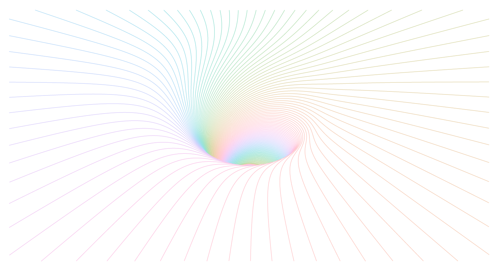

vignettes/05_SvgChop.Rmd
05_SvgChop.RmdAs an experiment we’ll try to import the following svg output from ln, a cool go program to create 3D line drawings for pen plotters.
The SVG file contains many polylines such as
<svg width="954" height="500" version="1.1" baseProfile="full" xmlns="http://www.w3.org/2000/svg" xmlns:xlink="http://www.w3.org/1999/xlink">
<g transform="translate(0,500) scale(1,-1)">
<polyline stroke="black" fill="none" points="465.28,191.39 465.93,191.59 465.93,191.59 466.57,191.78 466.57,191.78 467.22,191.98 467.22,191.98 467.87,...The svgchop package interprets a subset of the SVG standard and breaks down objects (polygons, paths, etc.) into linear paths with simple (x, y) coordinates, which can then feed to the Excalidraw draw element.
# remotes::install_github('brodieG/svgchop')
library(svgchop)
b <- chop('fun.svg', steps = 1)[[1]]
str(b, max.level = 1,
give.attr = FALSE, list.len = 3)## List of 185
## $ polyline: num [1:2, 1:78] 465 309 466 308 466 ...
## $ polyline: num [1:2, 1:1684] 418 298 418 297 418 ...
## $ polyline: num [1:2, 1:84] 464 309 465 308 465 ...
## [list output truncated]
str(b[[1]])## num [1:2, 1:78] 465 309 466 308 466 ...
## - attr(*, "closed")= logi FALSE
## - attr(*, "xml_attrs")=List of 3
## ..$ stroke: chr "black"
## ..$ fill : chr "none"
## ..$ points: chr "465.28,191.39 465.93,191.59 465.93,191.59 466.57,191.78 466.57,191.78 467.22,191.98 467.22,191.98 467.87,192.18"| __truncated__
## - attr(*, "xml_name")= chr "polyline"
## - attr(*, "style-computed")=List of 10
## ..$ fill : chr NA
## ..$ stroke : chr "#000000"
## ..$ fill-opacity : num 1
## ..$ fill-rule : 'default' chr "nonzero"
## ..$ stroke-width : num 1
## .. ..- attr(*, "unit")= chr ""
## ..$ stroke-opacity: num 1
## ..$ stop-color : 'default' chr "#000000"
## ..$ stop-opacity : 'default' chr "1"
## ..$ clip-path : chr NA
## ..$ clip-rule : chr NA
## - attr(*, "transform-computed")=List of 2
## ..$ mx : num [1:3, 1:3] 1 0 0 0 -1 0 0 500 1
## ..$ cmds:List of 3
## .. ..$ : chr(0)
## .. ..$ : chr [1:2] "translate(0 500)" "scale(1 -1)"
## .. ..$ : chr(0)
## ..- attr(*, "class")= chr "trans"
## - attr(*, "extents")=List of 2
## ..$ x: num [1:2] 465 491
## ..$ y: num [1:2] 307 309At this step it’s useful to check that the output is a list of polygon paths; some SVG files can be more complex and return a different structure, e.g. nested lists of grouped elements. Here we can simply iterate over the list of paths and draw each one.
The only trick worth noting is that the (x,y) position should correspond to the bottom-left of the path, and the point coordinates are then relative to this origin. It can often be useful to give a general scaling factor between the original SVG coordinates and the Excalidraw scene (not necessarily using the same units).
Since we have the coordinates of each path we can also alter them arbitrarily in R. For example here we might want to downsample each path for a smaller file output,
d <- Excali_doc()
library(scales)
cols <- hcl(seq(0, 360, length = length(b)))
step <- 50
scale <- 0.5
for (ii in seq_along(b)) {
col <- cols[ii]
s <- b[[ii]]
if(ncol(b[[ii]])>50)
s <- b[[ii]][1:2,seq(1,ncol(b[[ii]]),by=step)]
r_x <- range(s[1, ])
r_y <- range(s[2, ])
m <- scale * cbind(s[1, ] - r_x[1],
s[2, ] - r_y[1])
shape <- xkd_draw(
x = scale * r_x[1],
y = scale * r_y[1],
width = scale * diff(r_x),
height = scale * diff(r_y),
strokeWidth = 0.5,
roughness = 0L,
strokeSharpness = "round",
groupIds = list("levelplot",
paste0('level-', ii)),
fillStyle = "solid",
strokeColor = col,
points = m)
d$add(shape)
}
d$export('fun.json')You can see this drawing at: https://excalidraw.com/#json=5735613537976320,Yqz2x4xfrz7yGyiGCCxB0A
(with step=1 the output is quite big for excalidraw.com to handle, and the browser may become a bit sluggish)
